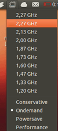
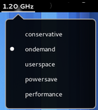
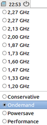
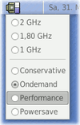

Prozessortaktung
Dieser Artikel wurde für die folgenden Ubuntu-Versionen getestet:
Dieser Artikel ist größtenteils für alle Ubuntu-Versionen gültig.
Hinweis:
Je nach Prozessortyp stehen gegebenenfalls nicht alle in diesem Artikel beschriebenen Abfrage- und Einstellmöglichkeiten zur Verfügung. Im BIOS muss ggf. Cool&Quiet (AMD) oder Speedstep (Intel) aktiviert werden.
Zum Verständnis dieses Artikels sind folgende Seiten hilfreich:
 Linux bietet die Möglichkeit, die Taktfrequenz des Prozessors (CPU) auszulesen und wenn notwendig, auch zu modifizieren bzw. den aktuellen Bedürfnissen (an die Rechenleistung) anzupassen. Dies wird normalerweise vollautomatisch erledigt.
Linux bietet die Möglichkeit, die Taktfrequenz des Prozessors (CPU) auszulesen und wenn notwendig, auch zu modifizieren bzw. den aktuellen Bedürfnissen (an die Rechenleistung) anzupassen. Dies wird normalerweise vollautomatisch erledigt.
Während die Taktfrequenzstufen und -grenzen durch die Hardware vorgegeben sind, entscheidet ein sogenannter "(Scaling-)Governor", wie die Taktfrequenz automatisch geregelt bzw. konkret angepasst wird. Dieser Artikel gibt Hinweise für manuelle Eingriffe.
Wer nicht zuerst den kompletten Artikel lesen möchte, findet im Abschnitt Links ein einfaches Shellskript, das die wichtigsten Informationen zur CPU, Governor, Taktfrequenz etc. im Terminal anzeigt.
Verfügbare Governors¶
ondemand - Standard bei den meisten Systemen. Die CPU-Frequenz wird den aktuellen Bedürfnissen an die Rechenleistung angepasst. Dabei wird die CPU-Frequenz u.U. sprunghaft angehoben oder abgesenkt.
conservative - Die CPU-Frequenz wird den aktuellen Bedürfnissen an die Rechenleistung angepasst. Die Taktfrequenz wird aber Schritt-für-Schritt angehoben bzw. abgesenkt.
performance - CPU läuft permanent auf der höchsten erlaubten Taktfrequenz.
powersave - CPU läuft permanent auf der niedrigsten erlaubten Taktfrequenz.
userspace - Dies ist kein kernel-eigener Governor. Vielmehr wird ein eigenes Governor-Programm verwendet. Sinnvoll, wenn der Kernel meint, nur den Governor performance verwenden zu können (siehe Problembehebung).
Hinweis:
Auch wenn die Bezeichnungen der Taktstufen anderes suggerieren, spart man bei powersave nicht unbedingt Strom! Im normalen Desktop-Betrieb sorgt powersave dafür, dass der Prozessor später in den "Schlafmodus" fällt, weil er langsamer rechnet und daher entsprechend länger braucht. Der Schlafmodus spart aber wesentlich mehr Energie als die niedrigste Taktfrequenz.
powersave ist nur dann sinnvoll, wenn ein Lüfter lärmt, der zu Ungunsten der Systemleistung langsamer drehen und damit leiser werden soll. In allen anderen Fällen heißt die stromsparendste Variante – auch bei Notebooks im Akkubetrieb – ondemand. Vor diesem Hintergrund ist eine Änderung des Governors in den allermeisten Fällen reine Spielerei.
Taktfrequenzanpassung beeinflussen¶
In aktuellen Ubuntu-Versionen wird die Prozessorsteuerung vollautomatisch (ondemand) über eine vordefinierte Kernel-Einstellung geregelt. Damit muss der Anwender diesbezüglich eigentlich nichts weiter tun, denn durch diese "Ondemand"-Einstellung (siehe obige Tabelle) wird die Prozessorlast automatisch verteilt und optimiert die Prozessor-Arbeitsverteilung.
Für die Regelung der Taktstufen hat man prinzipiell zwei Möglichkeiten: entweder grafisch (von der Desktop-Umgebung abhängig) oder im Terminal (desktop-unabhängig). Allerdings gilt auch hier das bereits gesagte: außer in Sonderfällen ist eine manuelle Steuerung der Taktfrequenz völlig überflüssig.
|  |
| Unity |
Unity¶
Für das ab Ubuntu 11.04 eingesetzte Unity gibt es das indicator-cpufreq  . Seit Ubuntu 12.04 ist es auch in den offiziellen Paketquellen enthalten und wird über das Paket
. Seit Ubuntu 12.04 ist es auch in den offiziellen Paketquellen enthalten und wird über das Paket
indicator-cpufreq (universe)
 mit apturl
mit apturl
Paketliste zum Kopieren:
sudo apt-get install indicator-cpufreq
sudo aptitude install indicator-cpufreq
installiert [1]. Nach einem einen Neustart bzw. Wiederanmelden kann man über das Symbol die Taktfrequenzen beeinflussen. Die Einstellungen gelten für den Prozessor, nicht für einzelne Prozessorkerne.
|  |
| GNOME 3 |
GNOME 3¶
Einer grafischen Anzeige, samt Änderungen der Frequenzen und Anpassungsmechanismen der Prozessorsteuerung, kann für die GNOME Shell mittels einer entsprechenden Shell-Extension nachinstalliert werden. Cpufreq kann - wenn geladen, installiert und aktiviert - ins obere Panel gelegt und die Prozessorlast steuern und überwachen.
Voraussetzung ist das Paket:
cpufrequtils (universe, Kontrolle und Einstellung der CPU-Frequenzen)
mit apturl
Paketliste zum Kopieren:
sudo apt-get install cpufrequtils
sudo aptitude install cpufrequtils
Weitere Voraussetzungen für den Betrieb oder Hilfestellung bei Problemen findet der Anwender in der Readme-Datei der Erweiterung. Ebenso finden sich dort weiterführende Informationen, wie z.B. welche Werkzeuge vorhanden und Bedingungen für 4 Kernprozessoren erfüllt sein müssen, damit in die Prozessorsteuerung eingegriffen werden kann. Außerdem enthält sie Hinweise zu vordefinierten Standardeinstellungen und vieles andere mehr.
Xfce¶
Auch unter Xubuntu kann ein natives Panel-Applet genutzt werden. Dazu fügt man dem Panel via  ein neues Element Governor Plugin hinzu. Der dazugehörige Paketname lautet:
ein neues Element Governor Plugin hinzu. Der dazugehörige Paketname lautet:
xfce4-cpufreq-plugin (universe, nur Anzeige der Taktfrequenz)
mit apturl
Paketliste zum Kopieren:
sudo apt-get install xfce4-cpufreq-plugin
sudo aptitude install xfce4-cpufreq-plugin
Als weitere Möglichkeit kann der im folgenden Abschnitt beschriebene indicator-cpufreq verwendet werden.
|  |
| LXDE |
LXDE¶
Das Panel von LXDE (lxpanel) enthält ein Mini-Programm (Applet), das die Taktfrequenz anzeigen kann. Eine Änderung der Taktfrequenz oder des Governors darüber ist nicht vorgesehen. Man kann alternativ wie unter Unity indicator-cpufreq nutzen, jedoch wird im Lxpanel kein Symbol angezeigt. Um das Symbol im Lxpanel dennoch anzuzeigen, müssen zuerst passende Bilddateien an den entsprechenden Ordner kopiert werden. Dazu öffnet man ein Terminal und kopiert die fünf benötigten Symbole mit folgendem Befehl:
sudo cp /usr/share/icons/ubuntu-mono-dark/status/22/indicator-cpufreq* /usr/share/pixmaps/
MATE¶
Zur grafischen Anzeige und Änderung der Frequenzen und Anpassungsmechanismen kann man das Programm mate-cpufreq-applet nutzen, welches in der Regel in der Standardinstallation von Ubuntu MATE enthalten ist. Der entsprechende Paketname lautet [1]:
mate-applets (universe)
mit apturl
Paketliste zum Kopieren:
sudo apt-get install mate-applets
sudo aptitude install mate-applets
|  |
| MATE |
Man führt einen Rechtsklick auf das MATE-Panel aus und wählt dann "Zum Panel hinzufügen -> Überwachen der Prozessortaktstufen". Dort sollte dann im Leerlauf (bei "ondemand") immer die niedrigst mögliche Frequenz angezeigt werden. Bei mehreren Kernen fügt man dem Panel weitere Instanzen des Programms hinzu und stellt dann jeweils die zu überwachende CPU ein.
Mit einem Linksklick  auf das Applet kann man die Taktstufen-Anpassung auch selbst verändern. So kann man beispielsweise die Taktrate fest auf den niedrigsten Wert einstellen. Klickt man zum ersten Mal auf einen der Werte, so muss ein Administrator des Systems diesen Vorgang erlauben.
auf das Applet kann man die Taktstufen-Anpassung auch selbst verändern. So kann man beispielsweise die Taktrate fest auf den niedrigsten Wert einstellen. Klickt man zum ersten Mal auf einen der Werte, so muss ein Administrator des Systems diesen Vorgang erlauben.
Kommandozeile¶
Zur Kontrolle (Änderungen sind nicht möglich) dient das Programm cpufreq-info aus dem Paket:
cpufrequtils (universe)
mit apturl
Paketliste zum Kopieren:
sudo apt-get install cpufrequtils
sudo aptitude install cpufrequtils
Beispiel:
cpufreq-info
Ausgabe für einen Pentium M Einkern-Prozessor (CPUs werden beginnend mit 0 hochgezählt):
cpufrequtils 007: cpufreq-info (C) Dominik Brodowski 2004-2009
Bitte melden Sie Fehler an cpufreq@vger.kernel.org.
analysiere CPU 0:
Treiber: acpi-cpufreq
Folgende CPUs laufen mit der gleichen Hardware-Taktfrequenz: 0
Die Taktfrequenz folgender CPUs werden per Software koordiniert: 0
Maximale Dauer eines Taktfrequenzwechsels: 20.0 us.
Hardwarebedingte Grenzen der Taktfrequenz: 600 MHz - 1.70 GHz
mögliche Taktfrequenzen: 1.70 GHz, 1.40 GHz, 1.20 GHz, 1000 MHz, 800 MHz, 600 MHz
mögliche Regler: conservative, ondemand, userspace, powersave, performance
momentane Taktik: die Frequenz soll innerhalb 600 MHz und 1.70 GHz.
liegen. Der Regler "ondemand" kann frei entscheiden,
welche Taktfrequenz innerhalb dieser Grenze verwendet wird.
momentane Taktfrequenz ist 1.20 GHz.
Statistik:1.70 GHz:14,12%, 1.40 GHz:0,02%, 1.20 GHz:0,03%, 1000 MHz:0,02%, 800 MHz:0,13%, 600 MHz:85,68% (266)Um schnell zwischen verschiedenen Governors umzuschalten, kann das folgende Skript verwendet werden:
1 2 3 4 5 6 7 8 9 10 11 12 13 14 15 16 17 18 19 | #!/bin/sh echo "gov - show or set governor (set requires root privileges)" echo "usage: [sudo] gov [o|ondemand|f|performance|p|powersave|c|conservative]" echo "governor in use:" getgov=$(cat /sys/devices/system/cpu/cpu*/cpufreq/scaling_governor) case $1 in o|ondemand) governor=ondemand;; f|performance) governor=performance;; p|powersave) governor=powersave;; c|conservative) governor=conservative;; *) echo $getgov exit;; esac for g in /sys/devices/system/cpu/cpu*/cpufreq/scaling_governor; do echo $governor > $g; done echo $(cat /sys/devices/system/cpu/cpu*/cpufreq/scaling_governor) |
Als gov abspeichern und ausführbar machen. Um den Governor ändern zu können, muss es mit Root-Rechten gestartet werden.
Hintergrundinfos und Einstellung im Terminal¶
Daten zur CPU-Frequenz auslesen¶
Alle relevanten Daten zur Taktfrequenz der CPU (wie z.B. mögliche Taktfrequenzen, aktuelle Taktfrequenz, Strategie für Taktfrequenzwechsel etc.) befinden sich in einem Unterverzeichnis von /sys. Dies ist keine "festes" Verzeichnis wie z.B. /usr oder /home, sondern wird bei jedem Systemstart bzw. zur Laufzeit dynamisch angelegt. Der Linux-Kernel legt in diesem Verzeichnis viele Systeminformationen ab. Um die Daten der CPU-Frequenz auszulesen, hilft das Verzeichnis /sys/devices/system/cpu/cpu0/cpufreq weiter.
Hinweis:
Hat man ein Mehrprozessorsystem, so existieren auch die Unterverzeichnisse .../cpu1/... , .../cpu2/... etc., je nach Anzahl der Prozessoren. Im Folgenden beziehen sich alle Beispiele auf die erste CPU (also cpu0). Alle Angaben sind aber 1:1 auf die anderen CPUs übertragbar.
Lässt man sich mit
ls /sys/devices/system/cpu/cpu0/cpufreq/
den Inhalt dieser Verzeichnisse ausgeben, erhält man eine Ausgabe wie z.B.
affected_cpus ondemand scaling_driver stats cpuinfo_cur_freq scaling_available_frequencies scaling_governor cpuinfo_max_freq scaling_available_governors scaling_max_freq cpuinfo_min_freq scaling_cur_freq scaling_min_freq
ondemand (der Name ist abhängig vom gerade verwendeten Governor) und stats sind Verzeichnisse, alles andere sind Textdateien, welche bestimmte Informationen zur CPU bzw. zur Taktfrequenz enthalten. Fast alle Dateien können ohne weiteres mit cat in einem Terminal [2] angezeigt werden.
Soll z.B. die maximal mögliche CPU-Frequenz ausgelesen werden:
cat /sys/devices/system/cpu/cpu0/cpufreq/cpuinfo_max_freq
1400000
Die Ausgabe erfolgt in KHz, d.h. diese CPU hat einen maximalen Takt von 1,4 GHz.
Details zum laufenden Governor¶
cat /sys/devices/system/cpu/cpu0/cpufreq/scaling_governor
conservative
ls /sys/devices/system/cpu/cpu0/cpufreq/conservative/ # spätestens seit Ubuntu 12.04 entfällt hier "cpu0/"
down_threshold ignore_nice_load sampling_rate sampling_rate_min freq_step sampling_down_factor sampling_rate_max up_threshold
Über diese Dateien kann zusätzlich das Verhalten des Governors im Detail beeinflusst werden. Dies wird weiter unten beschrieben (Manuelle Änderungen vornehmen). Interessierte können die entsprechenden Informationen auch unter Weiterführende Informationen nachlesen.
Taktfrequenzgrenzen des Prozessors¶
| Taktfrequenzgrenzen Prozessor | |
| Datei | enthält Info zu |
| cpuinfo_cur_freq | Die aktuelle Taktfrequenz der CPU. |
| cpuinfo_max_freq | Die maximale Taktfrequenz der CPU. |
| cpuinfo_min_freq | Die minimale CPU-Frequenz. |
Taktfrequenzgrenzen des Governors¶
Die Taktfrequenzwechsel müssen nicht unbedingt innerhalb der durch die Hardware (CPU) vorgegebenen Grenzen erfolgen, die Grenzen für die Governor werden über folgende Dateien im Verzeichnis /sys/devices/system/cpu/cpu0/cpufreq festgesetzt:
| Taktfrequenzgrenzen Governor | |
| Datei | enthält Info zu |
| scaling_available_frequencies | Gibt alle möglichen Frequenzen der CPU aus. |
| scaling_max_freq | Maximal (für den Governor) erlaubte Frequenz; muss nicht zwangsläufig identisch mit cpuinfo_max_freq sein! |
| scaling_min_freq | Minimale (für den Governor) erlaubte Frequenz; muss nicht zwangsläufig identisch mit cpuinfo_min_freq sein! |
| scaling_cur_freq | Aktuell vom Governor eingestellte Taktfrequenz |
Statistik über Taktfrequenzwechsel¶
Einige Statistiken zu den Frequenzwechseln enthält /sys/devices/system/cpu/cpu0/cpufreq/stats:
ls /sys/devices/system/cpu/cpu0/cpufreq/stats/
time_in_state total_trans trans_table
Den Dateien können folgende Informationen entnommen werden:
| Statistik | |
| Datei | enthält Info zu |
| time_in_state | Wie lange wurde mit welcher Taktfrequenz gearbeitet |
| total_trans | Anzahl der Taktwechsel |
| trans_table | Übersicht, wie oft von welcher Frequenz auf welche andere Frequenz gewechselt wurde |
Beispiel:
cat /sys/devices/system/cpu/cpu0/cpufreq/stats/time_in_state
1400000 53513 1200000 2616 1000000 2400 800000 2840 600000 1208171
cat /sys/devices/system/cpu/cpu0/cpufreq/stats/total_trans
5477
cat /sys/devices/system/cpu/cpu0/cpufreq/stats/trans_table
From : To
: 1400000 1200000 1000000 800000 600000
1400000: 0 282 258 291 1549
1200000: 52 0 12 12 206
1000000: 48 0 0 14 208
800000: 52 0 0 0 265
600000: 2228 0 0 0 0Manuelle Änderungen vornehmen¶
Artikel für fortgeschrittene Anwender
Dieser Artikel erfordert mehr Erfahrung im Umgang mit Linux und ist daher nur für fortgeschrittene Benutzer gedacht.
Achtung!
Die unüberlegte oder unvorsichtige Änderung von Dateien, welche die CPU-Taktfrequenz beeinflussen, kann im schlimmsten Fall zur Beschädigung der Hardware führen!
Governor und Frequenzgrenzen ändern¶
Manuell lassen sich folgende Änderungen vornehmen:
maximal erlaubte obere Taktfrequenz
minimal erlaubte untere Taktfrequenz
zu verwendener Governor
Hinweis:
Die Umleitung über tee ist für das Wechseln des Governors notwendig, da ein direktes echo conservative > /sys/... nicht erlaubt ist und mit einer Fehlermeldung beendet wird.
Die Änderungen lassen sich per echo in die entsprechende Datei schreiben. Im folgenden Beispiel wird zuerst der aktuelle Governor abgefragt, dann die möglichen Alternativen und anschließend der Governor von "ondemand" auf "conservative" gesetzt:
cat /sys/devices/system/cpu/cpu0/cpufreq/scaling_governor
ondemand
cat /sys/devices/system/cpu/cpu0/cpufreq/scaling_available_governors
powersave userspace ondemand conservative performance
echo conservative | sudo tee /sys/devices/system/cpu/cpu0/cpufreq/scaling_governor
conservative
Zu bedenken ist, dass die Änderung flüchtig ist, d.h. nach einem Neustart des Rechners muss die gewünschte Änderung erneut vorgenommen werden. Oder man nutzt die folgende Anleitung:
Einstellung bei Systemstart festlegen¶
Mit Hilfe der sysfsutils lassen sich Einträge im Verzeichnis /sys bei Systemstart vornehmen. So ist es z.B. auch möglich, den Governor festzulegen, ohne jedesmal den Befehl echo <Option> | sudo tee ... aufrufen zu müssen.
Dazu muss man das Paket
sysfsutils (universe)
mit apturl
Paketliste zum Kopieren:
sudo apt-get install sysfsutils
sudo aptitude install sysfsutils
installieren. Anschließend bearbeitet oder ergänzt man in der Konfigurationsdatei /etc/sysfs.conf in einem Editor mit Root-Rechten [3]. Um z.B. den "Ondemand Governor" festzulegen und den minimalen CPU-Takt auf 1,0 Ghz, ergänzt man folgende Zeilen:
devices/system/cpu/cpu0/cpufreq/scaling_governor = ondemand devices/system/cpu/cpu0/cpufreq/scaling_min_freq = 1000000
Hinweis:
Hat man einen Mehrkernprozessor, so müssen die entsprechenden Einträge natürlich auch für die weiteren CPUs vorgenommen werden.
Hinweis:
Wenn man sysfsutils für die dauerhafte Änderung des Governors benutzen möchte, sollte das ondemand-Skript in /etc/init.d deaktiviert werden, um sicher zu stellen, dass die in /etc/sysfs.conf vorgenommenen Einstellungen nicht überschrieben werden.
Dazu muss folgender Befehl eingegeben werden:
sudo update-rc.d ondemand disable
Kernel-Module¶
Ausbaufähige Anleitung
Dieser Anleitung fehlen noch einige Informationen. Wenn Du etwas verbessern kannst, dann editiere den Beitrag, um die Qualität des Wikis noch weiter zu verbessern.
Anmerkung: Dieser Abschnitt geht nicht auf das Modul intel-pstate ein, das teilweise bei neuen Intel-CPUs verwendet wird (Sandy Bridge und neuer). Siehe auch Intel Turbo Boost.
Die in diesem Artikel besprochenen Funktionen setzen voraus, dass ein entsprechendes Kernelmodul zur Taktfrequenzanpassung für den Prozessor geladen ist. Ob dies der Fall ist, lässt sich über den Befehl
lsmod | less
feststellen (beenden mit q).
In der Übersicht sollte, je nach Prozessor, eines der folgenden Module auftauchen:
| Übersicht | |
| Prozessortyp | Kernel-Modul |
| Intel Prozessoren neuerer Generation, bei korrekter ACPI-Implementierung | acpi-cpufreq oder intel-pstate |
| Intel Centrino (Kompatibilitätsmodus) | speedstep-centrino |
| Intel Pentium 4 (und teilweise neuere) | p4-clockmod |
| Intel Pentium-III M | speedstep-ich |
| AMD | je nach Modellreihe powernow-k6, powernow-k7 oder powernow-k8 |
| Mainboards mit Nforce2-Chipsatz | cpufreq_nforce2 |
In neueren Ubuntu-Versionen sind die Module teilweise statisch in den Kernel eingebunden, und werden daher nicht von lsmod angezeigt. Für intel-pstate prüft man das z.B. mit folgendem Befehl. Steht am Ende der Ausgabezeile ein "y", ist das Modul fest in den Kernel eingebunden und wird daher bei jedem Start geladen.
grep INTEL_PSTATE /boot/config* ... /boot/config-4.4.0-104-generic:CONFIG_X86_INTEL_PSTATE=y ...
In manchen Fällen - gerade bei Notebooks - kann es vorkommen, dass das BIOS falsche ACPI-Tabellenwerte zurückliefert. Dann kann es sein, dass entweder kein Modul geladen wurde oder ein anderes nötig ist. Benutzer mit einem Intel Core Duo können bei Problemen unter Umständen Abhilfe schaffen, indem sie das Kernel-Modul p4-clockmod laden.
Ab dem Kernel 3.15 (Ubuntu 14.10) wird für neuere Intel-Chips P-State verwendet. Dieser Treiber unterstützt nur die Governors "Performance" und "Powersave".
Ein Kernel-Modul wird mit
sudo modprobe -v modulname
geladen. Näheres zum Umgang mit Modulen erfährt man unter Kernelmodule.
Nach dem Laden des richtigen Moduls sollte das Heruntertakten funktionieren. Wenn nicht, dann kann vielleicht noch ein BIOS-Update/-Downgrade (bekannte Bugs beim BIOS von Asus Mainboards; siehe Forum) helfen.
Intel Turbo Boost¶
Mit Intel Turbo Boost wird die automatische Erhöhung des Rechentakts von Hauptprozessoren bezeichnet. Sie wurde von der Firma Intel eingeführt. Diese Funktion erhöht bei Bedarf kurzfristig die Rechenleistung, indem ein Kern übertaktet wird, während sich die anderen im Leerlauf befinden. Zwangsläufig steigen dadurch auch Energieaufnahme und Wärmeabgabe. Im zumeist vorherrschenden Leerlauf wird dann aber im Endeffekt weniger Energie verbraucht.
Um die dynamische Erhöhung des Prozessortaktes zu testen, öffnet man ein Terminal und startet den Befehl:
grep MHz /proc/cpuinfo
Bei einem Prozessor mit vier Kernen sollte die Ausgabe so aussehen:
cpu MHz : 1600.000 cpu MHz : 1600.000 cpu MHz : 1600.000 cpu MHz : 1600.000
Nun startet man ein zweites Terminal. Dort startet man eine Endlosschleife mit folgendem Befehl:
while :; do :; done
Im ersten Fenster ist nun wieder grep MHz /proc/cpuinfo auszuführen. Die Ausgabe sollte zeigen, dass ein Prozessor den maximalen Takt nutzt.
cpu MHz : 1600.000 cpu MHz : 3701.000 cpu MHz : 1600.000 cpu MHz : 1600.000
Die im zweiten Fenster noch laufende Schleife kann mit der Tastenkombination Strg + C abgebrochen werden. Sollte sich Turbo Boost auf diese Weise nicht nachweisen lassen, hilft u.U. ein Blick in die BIOS-Einstellungen des Rechners weiter.
Weiterführende Informationen¶
Weitere Informationen zu den verschiedenen Governors, den Dateien im Verzeichnis /sys/devices/system/cpu/cpu0/cpufreq und manuellen Eingriffsmöglichkeiten enthält die Kernel-Dokumentation. Diese kann über folgendes Paket installiert werden [1]:
linux-doc
mit apturl
Paketliste zum Kopieren:
sudo apt-get install linux-doc
sudo aptitude install linux-doc
Die entsprechenden Dokumente befinden sich dann im Verzeichnis /usr/share/doc/linux-doc-KERNELVERSION/Documentation/cpu-freq, wobei die KERNELVERSION je nach System variiert.
Problembehebung¶
ondemand-Governor startet nicht¶
Per Design - it's a feature, not a bug - wird der Rechner ab Ubuntu 9.04 mit dem Governor performance gestartet. Nach kurzer Zeit (wenige Minuten nach Systemstart) übernimmt der neue Dienst ondemand die Aufgabe, den gleichnamigen Governor ondemand zu aktivieren. Damit ist Ubuntu in der Lage, den Systemstart zu beschleunigen, während der Prozessor im normalen Betrieb dynamisch geregelt wird.
Allerdings können Probleme mit manchen CPUs auftreten, die auf performance bleiben. Zur Diagnose die Datei /var/log/kern.log auf Fehlermeldungen prüfen. Beispiel:
"ondemand governor failed, too long transition latency of HW, fallback to performance governor"
Praktisch heißt das: der Prozessor ist nicht in der Lage, ausreichend schnell herunter- bzw. hochzutakten. Daher wird er dauerhaft mit der höchsten Taktfrequenz betrieben.
Speziell beim Pentium 4 kann der Einsatz eines userspace-Governors in Kombination mit dem Kernelmodul p4-clockmod helfen. Obwohl einzelne Taktstufen dann frei wählbar sind, bewirkt die Auswahl von "Conservative" und "Ondemand" in manchen Fällen einen Rückfall auf "Performance" ("Powersave" funktioniert). Die Kontrolle kann alternativ auch mit PowerTOP erfolgen.
Der Dienst ondemand kann auch der Grund sein, wenn eigene Einstellungen (z.B. über /etc/rc.local) wieder überschrieben bzw. zurückgesetzt werden. Dies sollte bei Manipulationen am Governor beachtet werden.
Bis Ubuntu 13.04¶
Alternativ empfiehlt sich der Einsatz des Programms cpufreqd:
cpufreqd (universe)
mit apturl
Paketliste zum Kopieren:
sudo apt-get install cpufreqd
sudo aptitude install cpufreqd
Die Konfiguration erfolgt über die Datei /etc/cpufreqd.conf. Einfach einen Eintrag für ondemand erzeugen und die restlichen Einträge ausdokumentieren oder ersatzlos löschen.
Ab Ubuntu 13.10¶
Im Gegensatz zu früheren Ubuntu-Versionen sollte cpufreqd nicht mehr verwendet werden, da es mehr Probleme bereitet als löst.
Prozessor taktet bei unwichtigen Prozessen hoch¶
Ab Ubuntu 9.04 werden auch Prozesse niedriger Priorität (kleiner nice-Wert) bei dynamischen Govenor (z.B. ondemand) bei Auslastung mit hoher Taktfrequenz bearbeitet. Dies kann bei Hintergrundprozessen (z.B. BOINC) unerwünscht den Stromverbrauch erhöhen. Dies wird mit dem Setzen der Datei ignore_nice_load auf 1 geändert. Die einfachste Methode ist es, dies mit Hilfe der sysfsutils gleich beim Start festzulegen. Dazu muss das Paket sysfsutils installiert sein.
Dann öffnet man die Datei /etc/sysfs.conf mit einem Texteditor [3] und Root-Rechten [4] und fügt folgende Zeilen ein (spätestens seit Ubuntu 12.04 entfällt hier "cpu0/") :
devices/system/cpu/cpu0/cpufreq/scaling_governor = ondemand devices/system/cpu/cpu0/cpufreq/ondemand/ignore_nice_load = 1
Dann wird wie gehabt beim Start des Systems automatisch der Ondemand-Govenor eingestellt, allerdings ignoriert er dann Prozesse niedriger Priorität.
Um dieses Verhalten beim Systemstart automatisch zu aktivieren, kann man die Zeile:
## spätestens seit Ubuntu 12.04 entfällt hier "cpu0/" echo 1 > /sys/devices/system/cpu/cpu0/cpufreq/ondemand/ignore_nice_load
in die Datei /etc/rc.local eintragen.
Damit die Einstellung auch nach dem Erwachen aus dem Standby erhalten bleibt, muss die Datei /usr/lib/pm-utils/sleep.d/94cpufreq angepasst werden, um den "ignore_nice_load" erneut setzen:
1 2 3 4 5 6 7 8 9 10 11 | case "$1" in suspend|hibernate) hibernate_cpufreq ;; resume|thaw) thaw_cpufreq; echo 1 > /sys/devices/system/cpu/cpufreq/ondemand/ignore_nice_load ;; *) exit $NA ;; esac |
Links¶
laptop-mode-tools - Taktfrequenz etc. eines (Laptop-) Computers kontrollieren
Strom sparen - weitere Maßnahmen, um (am Laptop) Strom zu sparen
Shell-Skript zum schnellen Anzeigen der möglichen CPU-Frequenzen, verfügbarer Governors etc.

Why are missing the frequency options on cpufreq-utils indicator?

- Erstellt mit Inyoka
-
 2004 – 2017 ubuntuusers.de • Einige Rechte vorbehalten
2004 – 2017 ubuntuusers.de • Einige Rechte vorbehalten
Lizenz • Kontakt • Datenschutz • Impressum • Serverstatus -
Serverhousing gespendet von